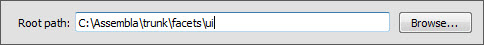

The file browser tool displays a hierarchical tree view of a specified portion of your file system and allows you to select directories or files within the hierarchy.
By default, the tool displays the root of your file system (or the root of your current drive on Windows). You can change the root either using the tool’s options dialog, available from the tool’s feature toolbar, or by connecting a source of file name paths to the tool’s root_path facet. The specified root is persisted across sessions.
Selecting a directory or file in the tool’s tree view assigns the selected item to various tool facets as follows:
Any other tools connected to one of these facets will update accordingly. The file or path most recently assigned to the tool’s path facet can also be dragged and dropped using the drag (upward pointing arrow) icon on the tool’s feature bar.
facets.extra.tools.file_browser
In addition to its input and output connections, the file browser tool also supports setting the following facets through the tool’s options dialog available via the tool’s feature toolbar:
Shows the file browser tool browsing a portion of the Facets source code tree.
Shows the file browser tool’s options dialog.